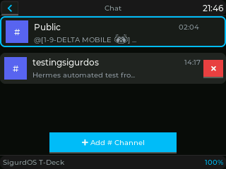
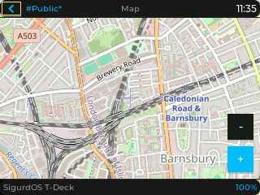
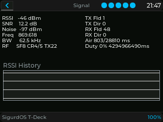
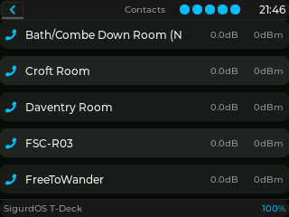
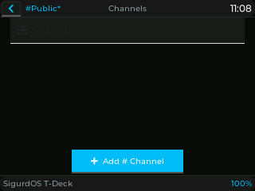

SIGURDOS
v beta-0.1.47-RC9
A fully open source firmware that turns the LilyGo T-Deck into a portable mesh communication device. Chat across your network, navigate with offline maps, and stay connected — no towers or internet required.
Metrics verified against beta-0.1.47-RC9 — as of August 11, 2026.
Features
SigurdOS packs a full mesh communication stack into a pocket-sized device. Every feature is built from the ground up for off-grid use.
Multi-Channel Chat
Full Discord-style messaging with dynamic channel discovery, DM support, an emoji picker, and message history that survives power loss. MeshCore applies different security properties to direct messages, channels, advertisements, and control traffic. Group messages use a shared channel key and do not authenticate an individual sender; not every packet is encrypted.
Offline Tile Maps
Navigate with offline PNG tile maps stored on the SD card. Pan, zoom, and explore without any network connection. The website map preview helps identify an area; offline packages must come from a provider that permits offline use.
Multi-Hop LoRa Mesh
Built on MeshCore, a battle-tested LoRa mesh networking library. Automatic route discovery, flood routing with ACKs, path-based direct messaging, and node discovery via periodic adverts. Ed25519 authenticates identities and signatures; it does not encrypt packets, and confidentiality depends on the MeshCore traffic type and channel configuration. Group messages use a shared channel key, while advertisements and some control packets are signed or unencrypted.
Network Visibility
Five dedicated screens for full mesh awareness: Heard (searchable RSSI list with columns), Network (recently active nodes), Trace (path quality to any contact), Signal (live RSSI/SNR with noise floor), and an integrated diagnostics terminal with colored log output.
Hardware Keyboard + Trackball
Full QWERTY input via the I2C keyboard MCU with configurable backlight brightness. Five-direction trackball with debounced events for one-handed navigation through the entire UI. Touch input also supported via the GT911 capacitive controller.
Live Configuration
On-device setup wizard for first boot, live radio config (frequency, spreading factor, TX power, coding rate), date/time setting, keyboard backlight control, node naming, and channel management with hashtag or PSK-based joining. All settings persist in NVS.
GPS + Battery Management
Built-in GPS support with multi-constellation NMEA parsing ($GP and $GN), battery voltage monitoring with percentage calculation, deep sleep on low battery, and automatic display auto-off after 30 seconds of inactivity.
Developer Friendly
PlatformIO-based build system, 1,587 passing native unit tests with hardware mocks as of RC9, CI/CD via GitHub Actions, CONTRIBUTING.md, and a web flasher for zero-tool firmware installation with browser-side SHA-256 verification. Project-authored code is GPL-3.0-only and open for contributions.
On-Device Screens
More than 22 screens and views across the full mesh experience. Here's a look at the main ones.









Technical Specs
Built for the LilyGo T-Deck, SigurdOS pushes the ESP32-S3 to its limits while leaving room for expansion.
Hardware
- MCUESP32-S3 @ 240 MHz
- Flash16 MB
- PSRAM8 MB
- DisplayST7789 320x240
- RadioSX1262 LoRa
- TouchGT911 Capacitive
- KeyboardESP32-C3 I2C Slave
- GPSL76K GNSS (Plus model)
Firmware
- UI FrameworkLVGL v9
- Display DriverLovyanGFX
- Mesh StackMeshCore
- Identity / signingEd25519
- Payload securityTraffic-dependent (MeshCore)
- Radio DriverRadioLib
- Font RenderingMontserrat + Noto Emoji
- PersistenceNVS + SPIFFS
- StorageMicroSD (optional)
Recent Releases
Active development. New features ship regularly.
Reliability: Diagnostic serial I/O moved outside the ESP32 critical section, SPIFFS remount recovery, and capped OTA state-save retries
Supply chain: SBOM coverage for URL-based PlatformIO requirements and pinned GitHub Actions updates
Verification: 1,587 native tests passed, 1 skipped; CI green
Mesh: Missing upstream command families, advert path semantics
Build: Espressif32 6.11.0 → 7.0.1, intelhex CI fix
Hardware: I2C 400 kHz shared init, SD zero-length write recovery, click deadtime
Storage: Atomic rename + save_counter modulo fix (22-day gap), 4-byte hash prefix, SPIFFS/nvs cleanup
UI: lv_obj_del_async guard, UTF-8 stripping, URL-encoded QR URIs, sender timestamps, battery div-by-zero guard
Security: WebServer OTA CSRF protection
Mesh: Sender/path discovery races resolved, room double-send, UTF-8 emoji truncation, channel-state corruption
UI: Theme refresh on change, outgoing screen freed (LVGL leak), Settings back nav restored, chart/nav/trace/brightness fixes
Storage: SD card lazy retry — single boot attempt, on-demand retry
CI: Debug + remote_test_radio in PR matrix, submodule updated, Launcher freeze fix, nav hang #672 fixed
Boot: Splash before startup, flash settle before ESP.restart(), boot banner removed
Hardware: I2C touch vs keyboard arbitration, analogReadMilliVolts, NVS full wipe, trackball blocked during PIN, LVGL PSRAM fallback, Serial.printf non-blocking guard
Launcher: Runtime detection (otadata), screen-load anim removed, I2C keyboard retry loop
Refactoring: screens.cpp split into per-screen modules, contact persistence w/ magic header, logging macros, non-blocking buzzer
CI: PR firmware compile, release checksums, nightly env smoke
Bug fixes: Public channel visibility, DM/PIN unlock crashes (×4), companion re-send, RF settings persistence
Code audit: 45+ test PRs — chat cap, onboarding, splash, emoji, lodepng, prefs, navigation, contract coverage, layout, QR, map, battery, SD, touch, buzzer, debug, telemetry, WiFi
Defaults: GPS disabled by default (privacy/battery), delay() removed before ESP.restart()
Map Preview ALPHA
SigurdOS supports offline PNG tile maps on the T-Deck. Use this interactive preview to inspect an area. It requests only tiles needed for the visible viewport; it does not build offline archives from community tile services.
Copy the extracted tiles/ folder to the root of your
T-Deck's SD card. Structure: tiles/<z>/<x>/<y>.png.
OpenStreetMap's standard tile service does not permit offline downloads or ZIP prefetching. Build packages from self-hosted tiles or a provider whose terms explicitly allow offline use.
Provider and OpenStreetMap contributor attribution remains visible on the map. Offline packages must also retain all attribution and licensing required by their source.
Interactive Map
Use the zoom controls or keyboard focus to explore the map. Only tiles visible in the map are requested.
Contributors
Open source is built by people (and sometimes bots). Everyone who contributes to SigurdOS gets a place here.
Get On The Mesh
Flash your T-Deck in under two minutes. No account. No tools to install. Just a browser and a USB cable.
Flash Your Device ContributeSite code is GPL-3.0-only. Third-party components retain their own licences and terms. Built for the mesh community.